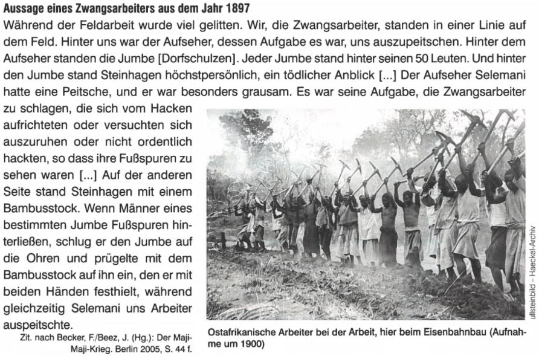

Ein Bild aus dieser Zeit
Jagdausflug per Draisine auf der Mittellandbahn in Deutsch-Ostafrika

Das Bild wurde 1910 von einem unbekanntem Fotografen geschossen.
Auf dem Bild sieht man einen «Jagdausflug per Draisine auf der Mittellandbahn in Deutsch-Ostafrika». So wurde auch das Bild genannt. Die Anordnung der Personen ist wie folgt; die Deutschen im Vordergrund sowie auf der Draisine. Der Afrikaner steht im Hintergrund des Bildes. Diese Anordnung spiegelt das Machtverhältnis zwischen den Deutschen und den Ostafrikanern dar. Die deutschen Offiziere und Gouverneure haben die Macht über Ostafrika, deshalb stehen sie auch im Vordergrund. Der Ostafrikaner befindet sich aufgrund seiner sozialen Stellung im Hintergrund. Er wird von den Deutschen als unwichtig oder minderwertig angesehen. Die Ostafrikaner hatten keine Stimme, wurden von der Kolonialmacht unterdrückt und als Menschen zweiter Klasse angesehen.
Ein weiteres Detail das zu beachten ist, ist das die Frau auf der Draisine sitzt. Die Frau hatte kein wirkliches Sagen im Vergleich zu den Männern ihrer Nation.
Wie haben die Einheimischen den Maji-Maji Krieg beziehungsweise die Kolonialzeit wahrgenommen?
Diese Textquelle stammt von einem ostafrikanischen Zwangsarbeiter. Dieser wurde von einem Reporter befragt, der diesen Text aufgeschrieben hat. Der Zwangsarbeiter war tätig am Eisenbahnbau unter der Macht von Deutschland. Die Quelle ist 1897 entstanden und wurde 2005 (wieder)veröffentlicht. Der Befragte nimmt keine Stellung zur über ihm herrschende Kolonialmacht an. Jedoch kann man erkennen das der Befragte sehr unter der deutschen Aufsicht und Macht gelitten hat. Es wird berichtet wie er und die einheimischen Zwangsarbeiter geschlagen und ausgepeitscht wurden ehe sie einen Fehler machten oder aufhörten zu arbeiten. Der befragte Ostafrikaner fühlt sich verbündet mit den anderen Einheimischen, er bezeichnet sich als Teil von ihnen. Das sieht man am folgenden Zitat; „Wir, die Zwangsarbeiter“ (ebd. Zeile 1). Ausserdem mussten die Jumben ihre Männer strafen. Deswegen kann man in diesem Fall von zuteils von einer (partiellen) indirekten Herrschaft sprechen. Jedoch nicht ganz denn trotzdem haben die Deutschen die Macht vor Ort übernommen und über Ostafrika geherrscht.
Welche Haltung nimmt der Autor zum Kolonialismus im Allgemeinen, zu dieser Kolonie im Speziellen ein?
Welche Haltung nimmt er gegenüber den Einheimischen ein? Der Zwangsarbeiter berichtet, wie die Aufseher mit den Zwangsarbeitern umgegangen sind. Die Arbeiter wurden geschlagen und gepeitscht sollten sie aufhören zu arbeiten oder einen Fehler machen. Der Berichtende erlebt den Kolonialismus sehr brutal sowie negativ. Es wird nicht erwähnt, was er über die deutschen Kolonialherren denkt. Jedoch kann man sagen er sowie viele andere Zwangsarbeiter unter der Kolonialmacht litten, deswegen kann man in diesem Fall von zuteils von einer (partiellen) indirekten Herrschaft sprechen. Jedoch nicht ganz denn trotzdem haben die Deutschen die Macht vor Ort übernommen und über Ostafrika geherrscht.